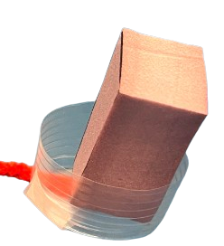
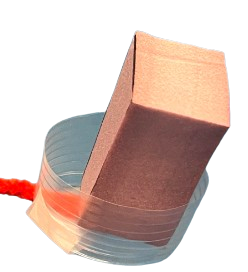

Shot Glass Stand
For my design and manufacturing class, I had to create something using at least two core manufacturing processes. This project was supposed to be something unique, and something with meaningful to us. Whenever I travel, I collect a shot glass for the city I am in, so that I have something to rememver the ciytu that I was in, and because it usually has artwork that is relevant to the cultural history of the city. So, I decided to make a shot glass stand that had a globe as the centerpiece. Below, I will outline all the different steps in the creation of this project.
-
Sketches
- The first part of my project was to create design sketches. I made very rough annoatead sketches of what I loosely wanted the project to look like. Those sketches are shown below.


 
